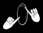
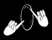

There are videos of these signs on YouTube at Jewish signs... (1), which contains general vocabulary from "Aaron" to "Levi"; Jewish signs... (2), which contains basic vocabulary from "Maariv" to "Yom Kippur" and a section on Brit Milah; Jewish signs... (3), which has sections on signs for the High Holidays, Passover, Purim, and other Holidays and Misc; and Jewish signs... (4), which has a section on signs for the Holocaust. This webpage is to describe the structure and origin of the signs glossed here and shown on YouTube and can serve as a printed reference if you cannot access the Web.
EXPLANATION OF THE GLOSSING SYSTEM USED
 Survival signs (General and Shabbat)
Survival signs (General and Shabbat)
In this first section, I provide you with about 130 survival signs; these constitute the minimum group of signs you would need to interpret a Shabbat (Sabbath) service with possible mention of future holidays. This is the most frequently interpreted event, especially when there is a Bar/Bat Mitzvah. They are glossed with a symbolic system that is explained at the end of this handout. For definitions of the terms, see Judaism 101 - Glossary of Jewish Terminology or use a web browser to search for "Jewish glossary". This works better than "Jewish dictionary" as a search phrase, which tends to lead you to either Yiddish-English or Hebrew-English dictionaries.
EXPLANATION OF THE GLOSSING SYSTEM USED
Here ends the most frequently used signs for an interpreter. Hadran alach (Hebrew for "we will study you again.") Below are some special categories if an interpreter were to work in some less frequent settings. Some of these are repeats of above but are very pertinent to the setting.
Survival signs (General and Shabbat)
 Jewish signs an educated interpreter should know (1).General vocabulary from "Aaron" to "Levi".
Jewish signs an educated interpreter should know (1).General vocabulary from "Aaron" to "Levi".
 Jewish signs... (2).Basic vocabulary from "Maariv" to "Yom Kippur".
Jewish signs... (2).Basic vocabulary from "Maariv" to "Yom Kippur".
Brit milah
Purim
 Jewish signs... (3).Signs for Rosh Hashana and Yom Kippur, Passover, Purim, and other Holidays and Misc.
Jewish signs... (3).Signs for Rosh Hashana and Yom Kippur, Passover, Purim, and other Holidays and Misc.
Rosh Hashana and Yom Kippur
Passover
Other Holidays
 Jewish signs... (4)Signs for the Holocaust.
Jewish signs... (4)Signs for the Holocaust.